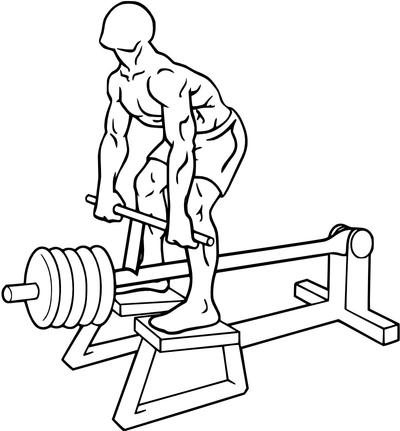

FITFUEL / ABOUT
网站介绍
让训练与营养形成一条完整路线
FitFuel Pro 面向希望建立规律训练与饮食记录习惯的用户。它把身体档案、训练设计、动作教学、食物选择和长期记录连接起来，帮助使用者理解目标与每天的行动。
先填写身体数据，系统给出参考能量与营养素目标；再通过动作库建立训练计划，按当天情况记录完成；最后记录每餐与体重，查看趋势与目标完成情况。
内容组织
- 身体：档案、指标与体重趋势。
- 训练：计划、动作库、动作详情、力量和有氧估算。
- 营养：目标、食物搜索、今日饮食和供能分析。
- 账户：独立登录、注册与用户中心。
- 站点：介绍、交互技术与联系方式。
首页链接到18个独立页面，左侧导航覆盖所有内容页。
设计语言
深蓝底色形成安静的记录环境，薄荷绿突出主要行动与进度，青色表示辅助信息。图像、文字动画与介绍视频围绕训练和营养主题展开。
桌面端使用真实嵌套框架集：顶部固定品牌导航、左侧分类菜单、右侧内容。窄屏可收起左侧栏，保证内容空间。
技术如何服务内容
HTML独立页面承载内容；CSS布局、滤镜与动画强化层级；热点图连接训练部位；表格比较营养；iframe展示三步互动原型；表单收集档案与记录；JavaScript负责计算、搜索和浏览器存储。
本项目所有核心资源均在站点文件夹内，记录只保存在当前浏览器。账户为课程本地演示，非服务端账号；营养表图片识别尚未接入真实服务。
让身体、训练与营养连接起来。
FitFuel 将日常记录组织在同一个站点，帮助你建立自己的生活节奏。

专业来源：Colossus Fitness。可暂停观察动作；此处播放完整原片。
视频来源 · Colossus Fitness（新窗口打开）视频暂未加载，单独打开本地视频后重试。